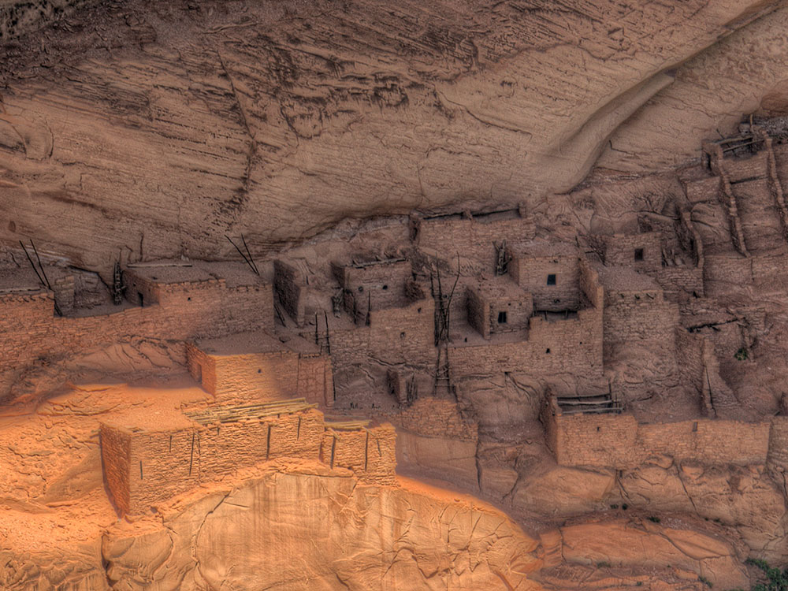
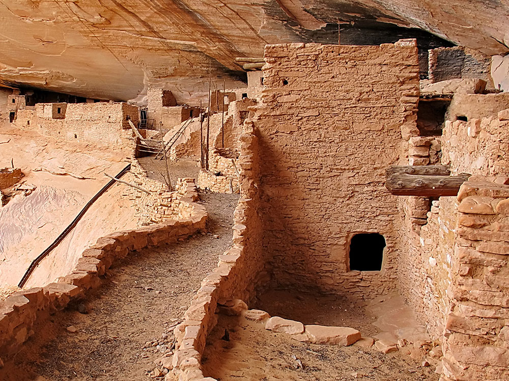
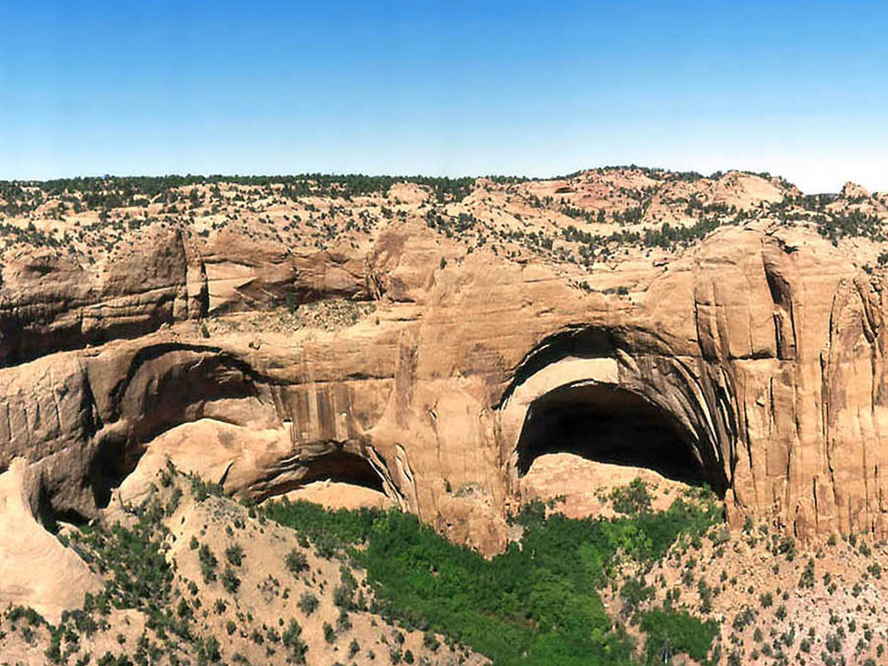
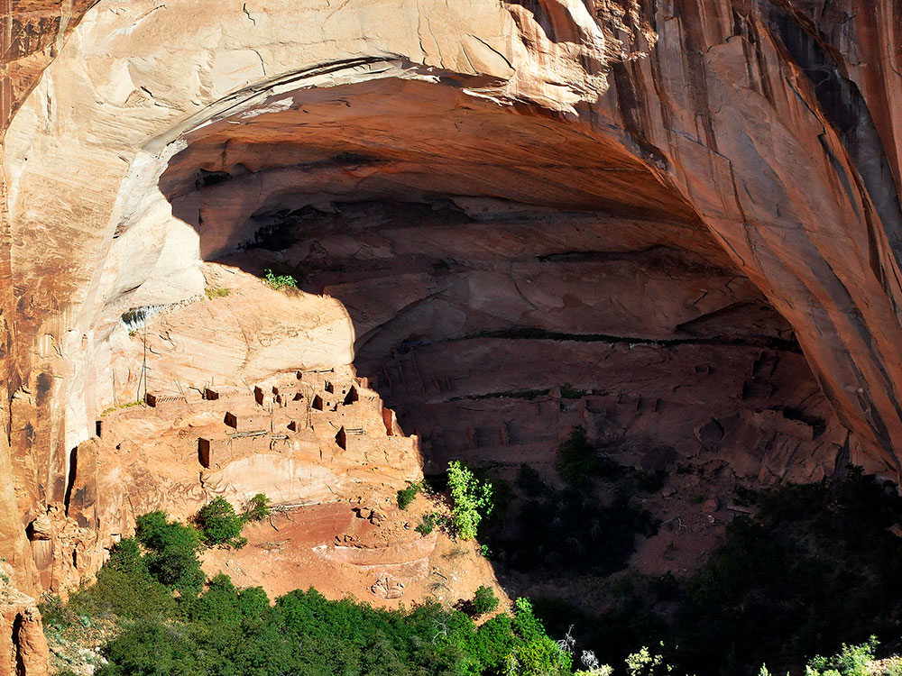

Preserved cliff dwellings built by Ancestral Puebloans, surrounded by high desert mesas and accessible via scenic trails and seasonal guided hikes.
General Information
Visitor Center: Summer (May–Sept): 9:00 AM – 5:00 PM MDT
Closed: Thanksgiving, Christmas, and New Year’s Day
Trails and campground remain open even when Visitor Center is closed
Ranger-led tours to Betatakin and Keet Seel: Free (advance reservation required)
Not permitted on trails or in buildings
Must be leashed (max 6 ft) and cleaned up after
How to Get There
From Page, AZ (125 mi): Take US-89 S to US-160 E, then turn north on AZ-564 and follow signs to the monument entrance.
Overview
Navajo National Monument protects three of the best-preserved Ancestral Puebloan cliff dwellings in the Southwest, Betatakin, Keet Seel and Inscription House, within the Navajo Nation of northern Arizona. Betatakin ("House Built on a Ledge") fills a huge sandstone alcove in Tsegi Canyon and was built in the late 1200s, while Keet Seel is one of the largest and best-preserved cliff dwellings in the region. Established in 1909, the 360-acre monument is a place of living Navajo and Hopi cultural connections and is quiet and remote, in contrast to the crowds at nearby Monument Valley. Visitors come for overlook views of Betatakin, ranger-led hikes into the canyon, free camping and the Navajo Nation's dark skies.
Access
The monument is on the Shonto Plateau about 30 miles southwest of Kayenta, reached by a paved 9-mile spur on AZ-564 off US-160. It is roughly 125 miles from Page and about 2.5 hours from Flagstaff, and nearly all visitors drive. The visitor center, campgrounds and Betatakin overlook trails are on the paved end of the road. Access to Keet Seel and Inscription House is by permit and hiking only, and Inscription House is closed to visitors.
Seasons
The monument is open year-round, and the main season for ranger-led hikes into Betatakin and Keet Seel runs from late spring through early fall, with tours limited or unavailable in winter. Spring and fall bring comfortable temperatures. Summer days can be warm with afternoon thunderstorms, and winter is cold with occasional snow on the plateau, so check conditions. The Navajo Nation observes daylight saving time, unlike most of Arizona.
Things to Do
Explore Remarkably Preserved Ancestral Puebloan Cliff Dwellings
Navajo National Monument preserves some of the finest cliff dwellings in the American Southwest. Located in northern Arizona within the Navajo Nation, the monument protects three major ancestral Puebloan villages built into sandstone alcoves between approximately A.D. 1250 and 1300. The monument offers visitors a unique opportunity to experience both archaeological wonders and the stunning landscapes of the Colorado Plateau.
Visit the Monument Visitor Center
The visitor center features exhibits on Ancestral Puebloan culture, archaeology, geology, and the history of the region. Interpretive displays, artifacts, and educational materials provide visitors with a deeper understanding of the people who once inhabited the canyon country surrounding the monument.
View Betatakin Cliff Dwelling
Betatakin is one of the monument's most famous and accessible cliff dwellings. Built within a massive sandstone alcove, the site contains dozens of rooms and offers an extraordinary glimpse into the lives of the Ancestral Puebloans who once called the area home.
Discover Spectacular Canyon Landscapes
The monument encompasses deep canyons, piñon-juniper woodlands, sandstone cliffs, springs, and diverse desert ecosystems. Scenic overlooks provide breathtaking views of Tsegi Canyon and the surrounding Colorado Plateau landscape.
Learn About Navajo and Indigenous Heritage
Located within the Navajo Nation, the monument provides opportunities to learn about the cultural significance of the land and the rich heritage of the Navajo people. Interpretive programs often highlight both ancient and contemporary Indigenous connections to the region.
Enjoy Wildlife Viewing and Stargazing
The monument supports wildlife including mule deer, coyotes, ravens, hawks, and numerous bird species. Its remote location and dark skies also make it an excellent destination for stargazing, astronomy, and night photography.
Top Trails
Sandal Trail
Length: Approximately 1.3 miles round trip
Elevation Gain: Moderate
Difficulty: Easy to Moderate
The monument's most popular trail leads to an overlook of Betatakin Cliff Dwelling. Interpretive exhibits along the route explain Ancestral Puebloan culture, archaeology, and natural history while offering spectacular canyon views.
Betatakin Guided Hike
Length: Approximately 5 miles round trip
Elevation Gain: Significant
Difficulty: Moderate to Difficult
When available through ranger-led programs, this guided hike descends into Tsegi Canyon and provides close access to the Betatakin Cliff Dwelling. Participants learn about archaeology, geology, and the history of the site's inhabitants.
Canyon View Trail
Length: Approximately 0.5 miles round trip
Elevation Gain: Minimal
Difficulty: Easy
This short walk offers panoramic views of the surrounding canyon system, sandstone cliffs, and high-desert landscapes. It is an excellent option for visitors seeking scenic viewpoints with minimal hiking.
Betatakin Overlook Trail
Length: Approximately 1 mile round trip
Elevation Gain: Minimal to Moderate
Difficulty: Easy
This scenic route provides additional perspectives of Tsegi Canyon and the surrounding landscape while highlighting the monument's geological and cultural significance.
Visitor Centers
The Navajo National Monument Visitor Center sits beside the canyon rim and has a museum with artifacts and exhibits on Ancestral Puebloan and Navajo culture, a small bookstore, restrooms and a viewing area. Rangers provide trail information, tour reservations and permits for the backcountry hikes. The trails and campgrounds stay open even when the visitor center is closed, and admission is free, so check the National Park Service website for current hours and tour schedules.
Camping and Lodging
The monument has two free first-come, first-served campgrounds, Sunset View and Canyon View, with restrooms and water in season but no hookups. There is no lodging in the monument. Hotels, motels and restaurants are in Kayenta, about 30 minutes away, and the lodge at Monument Valley is about an hour away. Page and Flagstaff offer additional lodging 2 to 2.5 hours away. Check each location's website for current availability.
Sources: National Park Service official Navajo National Monument information, including details on Betatakin, Keet Seel, archaeological resources, visitor programs, hiking trails, and cultural history.
https://www.nps.gov/nava/index.htm
Additional information verified through National Park Service visitor resources covering the Sandal Trail, cliff dwellings, ranger-guided tours, Tsegi Canyon, Indigenous history, and recreational opportunities within Navajo National Monument.
https://www.nps.gov/nava/planyourvisit/index.htm Additional information from the National Park Service.
This article uses material from the Wikipedia article "Navajo National Monument", which is released under the Creative Commons Attribution-Share-Alike License 3.0

.jpg){kind=link}




